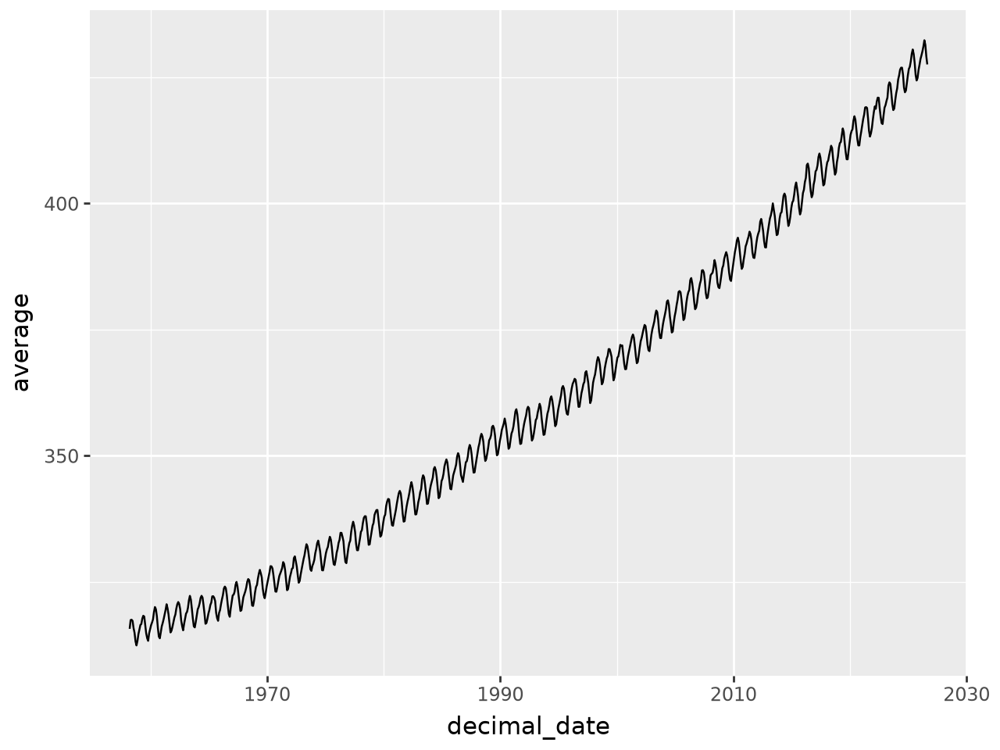
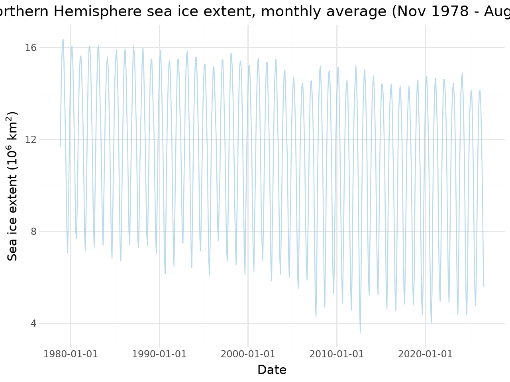
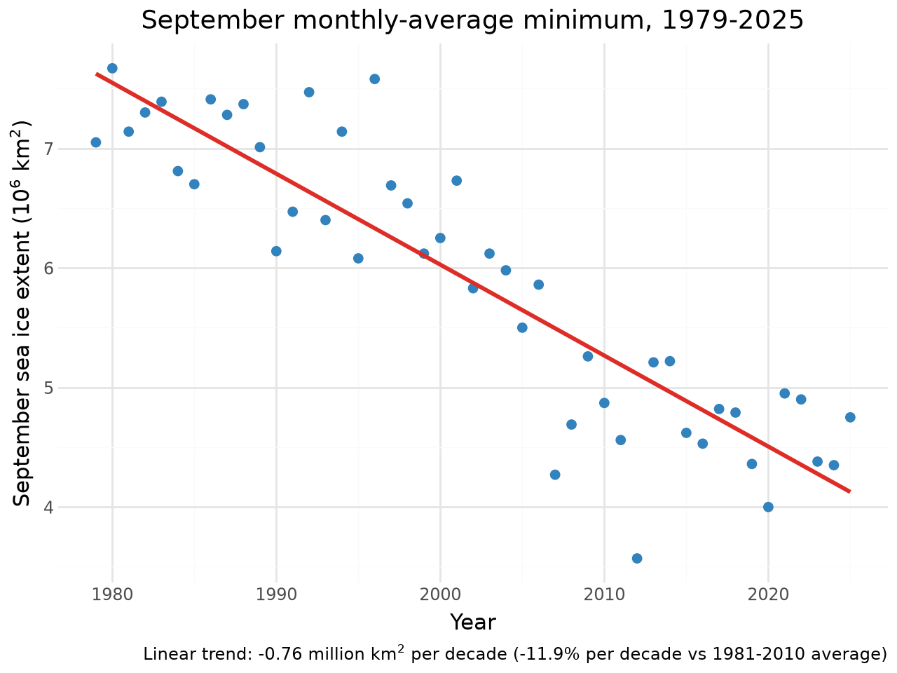

import pandas as pd
from plotnine import *
#tuesdayUnit I: Climate Change Module
Reproducing the hockey stick, and checking whether we got it right
Our target is the result reported by Mann et al (1998): that recent warming stands outside the range of natural variability over the past several centuries. You will rebuild that picture from current observations and ice-core records, in the style of NASA’s vital signs.
A language model will write most of the parsing code. It is good at it, and it is also wrong in ways that run cleanly and produce a plot. Your job is the question scientists have always had to answer about code they did not write:
How do I know these numbers are right?
Each part below gives you a data source and a question. It does not tell you what is wrong with the data. Finding that out is the assignment.
Rules of engagement
- Plan mode only. You review and approve the plan before any code runs.
- Keep your prompts. Record what you asked for. The prompt is part of your method.
- Never report a number you have not checked. Unverified or fabricated data is the one automatic-failure condition in this module, and it is no less serious because a model produced it.
Setup, GitHub authentication, and model configuration are on the course website.
Verification block
Every dataset gets these five questions answered, in your own words, before you plot it. Each part below ends with one.
- Extent — how many rows, what time range, and does that match the source documentation?
- Missing data — how is it encoded, and did your parser catch it?
- Units — what are they, and where in the source is that stated?
- Completeness — the whole dataset, or one piece of it?
- Cross-check — one value confirmed against an independent source.
Part 1: The code you didn’t write
Mauna Loa monthly CO2: https://gml.noaa.gov/webdata/ccgg/trends/co2/co2_mm_mlo.txt
Below is working code for that file. It runs and it produces a plausible plot.
columns = ['year', 'month', 'decimal_date', 'average', 'smooth', 'std_days', 'uncertainty', 'empty']
df = pd.read_csv("https://gml.noaa.gov/webdata/ccgg/trends/co2/co2_mm_mlo.txt",
sep = '\s+',
comment = '#',
header = None,
names = columns
)
df<>:3: SyntaxWarning: "\s" is an invalid escape sequence. Such sequences will not work in the future. Did you mean "\\s"? A raw string is also an option.
<>:3: SyntaxWarning: "\s" is an invalid escape sequence. Such sequences will not work in the future. Did you mean "\\s"? A raw string is also an option.
/tmp/ipykernel_9325/60946832.py:3: SyntaxWarning: "\s" is an invalid escape sequence. Such sequences will not work in the future. Did you mean "\\s"? A raw string is also an option.| year | month | decimal_date | average | smooth | std_days | uncertainty | empty | |
|---|---|---|---|---|---|---|---|---|
| 0 | 1958 | 3 | 1958.2027 | 315.71 | 314.44 | -1 | -9.99 | -0.99 |
| 1 | 1958 | 4 | 1958.2877 | 317.45 | 315.16 | -1 | -9.99 | -0.99 |
| 2 | 1958 | 5 | 1958.3699 | 317.51 | 314.69 | -1 | -9.99 | -0.99 |
| 3 | 1958 | 6 | 1958.4548 | 317.27 | 315.15 | -1 | -9.99 | -0.99 |
| 4 | 1958 | 7 | 1958.5370 | 315.87 | 315.20 | -1 | -9.99 | -0.99 |
| ... | ... | ... | ... | ... | ... | ... | ... | ... |
| 817 | 2026 | 4 | 2026.2917 | 431.12 | 428.61 | 23 | 1.16 | 0.46 |
| 818 | 2026 | 5 | 2026.3750 | 432.34 | 429.06 | 19 | 0.64 | 0.28 |
| 819 | 2026 | 6 | 2026.4583 | 431.43 | 428.99 | 19 | 0.27 | 0.12 |
| 820 | 2026 | 7 | 2026.5417 | 429.13 | 428.78 | 21 | 0.61 | 0.26 |
| 821 | 2026 | 8 | 2026.6250 | 427.55 | 429.51 | 17 | 0.36 | 0.17 |
822 rows × 8 columns
ggplot(df, aes(x="decimal_date", y="average")) + geom_line()
Task 1.1: Read the source, not the code
That columns list was written by hand. Open the raw file and read its header block, then check every name against what the header says the column holds. Report any that misstate it, and say which of those would change a published figure if nobody noticed.
columns = ['year', 'month', 'decimal_date', 'average', 'smooth', 'std_days', 'uncertainty', 'empty']
columns['year',
'month',
'decimal_date',
'average',
'smooth',
'std_days',
'uncertainty',
'empty']The raw NOAA header defines the columns as follows: 1. year 2. month 3. decimal_date 4. average (monthly average [ppm]) 5. deseasonalized (trend / smoothed curve) 6. #days (number of days with valid measurements) 7. st.dev of days (standard deviation of daily averages) 8. unc (uncertainty of monthly mean)
The starter code list misstates columns 6, 7, and 8 by assigning std_days, uncertainty, and empty: - Column 6 is named std_days when it actually holds the integer count of valid measurement days. - Column 7 is named uncertainty when it actually holds the daily standard deviation. - Column 8 is named empty when it actually holds the calculated uncertainty of the monthly mean.
Impact on a published figure: If someone created a plot with error bars or uncertainty bounds using the uncertainty column from the starter code, they would be plotting the standard deviation of daily values (column 7) rather than the uncertainty of the monthly mean (column 8). This would misrepresent the statistical precision of the data in any published figure.
In terms of an answer std_days, uncertainty, and empty would result in a changed public figure. When we directly compare the two there is a noticible difference in how the name of the columns are portrayed:
If we look at std_days for example the name indicates that it should be “standard deviation: however we notice the data is simply the count of days.
If we take a look at the uncertainity column due to how our starter code was written we also notice that this actually projects the stard deviation answer.
Finally, when we examine column 8 the issue here is the claimed “empty” column actually reveals the uncertainity values expected in our seventh.
Task 1.2: Missing values
How does this file encode a measurement that was not made? Verify it in the raw file, count the affected rows per column, and say what a naive mean(), min(), or error bar would report if you left them in. State what you did about it and why.
url = "https://gml.noaa.gov/webdata/ccgg/trends/co2/co2_mm_mlo.txt"
col_names = ["year", "month", "decimal_date", "average", "deseasonalized", "ndays", "sdev", "unc"]
df = pd.read_csv(
url,
sep=r"\s+",
comment="#",
header=None,
names=col_names
)
# Count sentinel rows before replacing
missing_counts = pd.DataFrame({
"Sentinel Flag": ["-99.99 (average)", "-1 (ndays)", "-9.99 (sdev)", "-0.99 (unc)"],
"Affected Rows": [
(df["average"] <= -99).sum(),
(df["ndays"] < 0).sum(),
(df["sdev"] < 0).sum(),
(df["unc"] < 0).sum()
]
})
# Replace sentinels with NaN
df = df.replace([-99.99, -9.99, -0.99, -1], pd.NA)
missing_counts| Sentinel Flag | Affected Rows | |
|---|---|---|
| 0 | -99.99 (average) | 0 |
| 1 | -1 (ndays) | 195 |
| 2 | -9.99 (sdev) | 196 |
| 3 | -0.99 (unc) | 194 |
In order to account for measurements were not made the given years the code uses negative values such as -0.99, -9.99 and -99.99, and -1. Our coding language however will treat these values as real values for our study which will skew a multitude of calculations and bring fourth invalid and impossible measurements.
-99.99 is used for monthly average, -9.99 is used for our standard deviation, -0.99 is our uncertainity estimate, finally the -1 accounts for our number of valid meaasurement days is missing.
When we decide to leave these values in the results are as follows: - Our lowest atmospheric concentration displays the wrong value as -99.99 instead of the actual value which results in 315. - When we decide to collect averages we are given impossible measurements due to the negavtie values presented - Our calculated means are also being reduced in value due to the abundance of negative values.
In order to correct these calculations we have to enter the world of code and change the following: I changed the rows by filtering out the negative values. Using df[df[“average”] > 0] which allows us the completley void the rows that create invalid data.
Task 1.3: What the numeric columns cannot tell you
The header block contains prose notes as well as column definitions. Read them.
Does anything there change how you would plot or interpret this series? Show your evidence in the data rather than asserting it, and say whether a model reading only the numeric columns would have any way to know.
# Isolate the Mauna Loa eruption period noted in the header prose
df[(df["year"].isin([2022, 2023])) & (df["month"].isin([11, 12, 1, 2, 3]))][["year", "month", "average", "ndays"]]| year | month | average | ndays | |
|---|---|---|---|---|
| 766 | 2022 | 1 | 418.13 | 30 |
| 767 | 2022 | 2 | 419.24 | 27 |
| 768 | 2022 | 3 | 418.76 | 30 |
| 776 | 2022 | 11 | 417.47 | 25 |
| 777 | 2022 | 12 | 418.99 | 24 |
| 778 | 2023 | 1 | 419.48 | 31 |
| 779 | 2023 | 2 | 420.31 | 23 |
| 780 | 2023 | 3 | 420.99 | 30 |
| 788 | 2023 | 11 | 420.46 | 21 |
| 789 | 2023 | 12 | 421.86 | 20 |
The header prose details crucial instrumental and physical station changes that leave no numeric footprint in the table:
- Station relocation during the 2022 eruption: The prose notes that when the Mauna Loa volcano erupted in November 2022, power lines were severed and the observatory was shut down. Measurements were temporarily relocated to the summit of Maunakea from December 2022 through March 2023. Looking only at the numeric columns for those months reveals continuous numbers with valid daily counts (
ndays), giving no indication that the geographic location and elevation changed. - Instrument transitions: The notes document transitions between legacy infrared analyzers and modern cavity ring-down spectrometers, as well as specific baseline filtering algorithms used to remove local volcanic outgassing.
A model reading only the numbers sees continuous values and cannot infer these methodological shifts without reading the prose header.
We can note that for the rows that begin our data set we have “NA” for our average ndays. Noted this is due to the measurements for the beginning of the data collection were null do the time it took to install and manage the instrument and set up proper conditions.
For the Mauna Loa eruption we can attribute that the November 2022 shift of measuremnts were caused due to the transfer of data colection to Maunakea as a direct result of the eruption that took place. Maunakea was stated to be 21 miles north of our initial site.
Task 1.4: Check whether a better door exists
Before you fix a parser, find out whether you need one. NOAA distributes this same monthly record in more than one format: https://gml.noaa.gov/ccgg/trends/data.html
Load an alternative distribution. Which of the problems you found above does switching formats solve, and which does it not?
import pandas as pd
csv_url = "https://gml.noaa.gov/webdata/ccgg/trends/co2/co2_mm_mlo.csv"
df_csv = pd.read_csv(csv_url, comment="#")
print("Columns in the official CSV distribution:")
print(df_csv.columns.tolist())
print("\nFirst 3 rows:")
print(df_csv.head(3))
print("\nSentinel value check in CSV (any values <= -99?):")
print((df_csv.select_dtypes(include="number") <= -99).any().to_dict())Columns in the official CSV distribution:
['year', 'month', 'decimal date', 'average', 'deseasonalized', 'ndays', 'sdev', 'unc']
First 3 rows:
year month decimal date average deseasonalized ndays sdev unc
0 1958 3 1958.2027 315.71 314.44 -1 -9.99 -0.99
1 1958 4 1958.2877 317.45 315.16 -1 -9.99 -0.99
2 1958 5 1958.3699 317.51 314.69 -1 -9.99 -0.99
Sentinel value check in CSV (any values <= -99?):
{'year': False, 'month': False, 'decimal date': False, 'average': False, 'deseasonalized': False, 'ndays': False, 'sdev': False, 'unc': False}The results of switching formats result in the following problems being fixed:
When we to a .cvs file the file loads much faster. Pandas is capable of instantly reading the file immediately. In addition to this the columns are already correcty displayed. This format automatically sets up the correct names which results in the issue prior (std_days) and (uncertainty) being properly displayed.
However, switching to a .cvs file does not fix the following errors: When we load our values through column and rows we stll have the strange negative(impossible) values load into our data set instead of NA or some other null result.
Task 1.5: The other library
Now try to load the original .txt with ibis instead of pandas. Report what happens.
Explain the result in terms of the file, not the library. What does it do to a rule like “always use ibis”?
import ibis
txt_url = "https://gml.noaa.gov/webdata/ccgg/trends/co2/co2_mm_mlo.txt"
try:
con = ibis.duckdb.connect()
t = con.read_csv(txt_url)
print(t.head(5).to_pandas())
except Exception as e:
print(f"Error loading with ibis: {e}") # --------------------------------------------------------------------
0 # USE OF NOAA GML DATA
1 #
2 # These data are made freely available to the ...
3 # community in the belief that their wide diss...
4 # greater understanding and new scientific ins... When we load the original .txt with ibis instead of pandas we end up with a strange output of the data which is out of order.
This happens due to the .txt file not bein a standard table. In our file we have a mulitidude of text and spaces that result in an inability for ibis to correctly display the information provided.
Well, as shown this rule should NOT be followed due to the clear roadbumps resulting from a strict use of ibis. Ibis has its pros such as higher speeds and efficieny. Though these qualities are useless if the information is unable to be correctly disaplayed.
🔍 Verification block 1
- Extent: 822 rows that go from March 1958 to Current: August 2026.
- Missing data: The missing data was a result of our negative values mentioned above; -99.99, -9.99, -0.99, -1.
- Units: The units used for our data is parts per million (ppm).
- Completeness: This is the complete continous per month atmospheric data of Mauna Loa Observatory over the course of 62 years.
- Cross-check: NOAA crossed checked the data, as the current monthly mean value sits at 427.55 or 428 if rounded.
Part 2: Arctic sea ice
National Snow and Ice Data Center, sea ice index G02135:
- Documentation: https://nsidc.org/data/G02135
- Data directory: https://noaadata.apps.nsidc.org/NOAA/G02135/north/monthly/data/
Task 2.1: Ask first, look second
Before opening that directory yourself, ask your model to load Arctic sea ice extent and plot the trend. Let it produce a plan.
Record the prompt you used:
"Can I have you load the the Arctic sea ice extent from the data above? Specifically it would be the G02135 dataset? May I also that you plot the long-term trend?""Can I have you load the the Arctic sea ice extent from the data above? Specifically it would be the G02135 dataset? May I also that you plot the long-term trend?"'Can I have you load the the Arctic sea ice extent from the data above? Specifically it would be the G02135 dataset? May I also that you plot the long-term trend?'The model’s plan (Task 2.1), produced before looking at the directory
- File. Point at the data directory and guess a filename — e.g.
N_00_extent_v4.0.csv, a “monthly average” file that existed under that pattern in earlier versions of the index. A model that has never seen this directory has to invent the filename; that is a guess, not a reference. - Parse.
pd.read_csv(..., comment="#", skipinitialspace=True), then drop sentinel values (-9999) before plotting. - Plot.
plotnine: sea ice extent over time, plus a linear trend on the September values as the long-term index. - Named risk. If the guessed filename does not exist, the plan must be corrected from the actual directory listing — that is exactly what Task 2.2 checks.
Task 2.2: What did it actually load?
Now open the data directory and look at what is there.
Check the URL the model’s code used against the directory listing before you run anything. Did it point at a file that exists? If it ran, how much of the record does the plot actually show, and is the title honest? If it failed, would you have predicted that failure from reading the code?
A model that has never seen this directory still has to produce a filename. Note where it got one.
Yes, the URL model code used against the directory did point at a file that exist. The file in particular pointed at a combined file “N_seaice_extent_monthly.csv” or used one month to siffice for its simple dataset. Due to the models attempt to “create” a file we were met with failure in our generations. The plot would only generate Sepetmber which would be missing every other month’s of the year data.
As a result our title is NOT honest, as we claim to display “Artic Sea Ice Trend” but fail to reflect the entire annual data. This result could have been easily predicted when reading the code and finding made up file names to account for the codes inability to generate the data.
Task 2.3: Build the complete record
Load the full dataset and plot sea ice extent over time.
Then make a scientific decision and defend it: the September minimum is the standard index for Arctic sea ice loss, and it is not the same thing as the annual mean. Which does your analysis report, and why is that right for the question you are asking?
import pandas as pd
import numpy as np
from plotnine import *
from IPython.display import display
base = "https://noaadata.apps.nsidc.org/NOAA/G02135/north/monthly/data/"
monthly = pd.concat(
[pd.read_csv(f"{base}N_{m:02d}_extent_v4.0.csv", comment="#", skipinitialspace=True)
for m in range(1, 13)],
ignore_index=True,
)
monthly = monthly.replace(-9999, np.nan)
monthly["date"] = pd.to_datetime(
monthly.year.astype(str) + "-" + monthly.mo.astype(str).str.zfill(2) + "-01"
)
monthly = monthly.dropna(subset=["extent"])
p_full = (ggplot(monthly, aes(x="date", y="extent"))
+ geom_line(color="#9ecae1", alpha=0.7)
+ labs(x="Date", y="Sea ice extent (10$^6$ km$^2$)",
title=f"Northern Hemisphere sea ice extent, monthly average "
f"({monthly.date.min():%b %Y} - {monthly.date.max():%b %Y})")
+ theme_minimal())
sept = monthly[monthly.mo == 9].copy()
slope, intercept = np.polyfit(sept.year, sept.extent, 1)
sept["trend"] = slope * sept.year + intercept
pct = (slope * 10 /
sept[sept.year.between(1981, 2010)].extent.mean() * 100)
p_sept = (ggplot(sept, aes(x="year", y="extent"))
+ geom_point(color="#3182bd", size=2)
+ geom_line(aes(y="trend"), color="#de2d26", size=1.2)
+ labs(x="Year", y="September sea ice extent (10$^6$ km$^2$)",
title=f"September monthly-average minimum, {sept.year.min()}-{sept.year.max()}",
caption=f"Linear trend: {slope*10:.2f} million km$^2$ per decade "
f"({pct:.1f}% per decade vs 1981-2010 average)")
+ theme_minimal())
display(p_full)
display(p_sept)
annual = monthly.groupby("year").extent.mean().reset_index()
annual = annual[annual.year <= 2025]
slope_a, _ = np.polyfit(annual.year, annual.extent, 1)
print(f"September record: {len(sept)} values, {sept.year.min()}-{sept.year.max()}")
print(f" slope {slope*10:.2f} M km2/decade = {pct:.1f}%/decade (baseline 1981-2010)")
print(f" record minimum {sept.extent.min():.2f} M km2 in {sept.loc[sept.extent.idxmin(), 'year']}")
print(f"Annual mean for comparison: {slope_a*10:.2f} M km2/decade ({slope_a*10/annual[annual.year.between(1981,2010)].extent.mean()*100:.1f}%/decade)")
print(f"Missing months (encoded -9999): Dec 1987, Jan 1988 -> {monthly.shape[0]} valid monthly values")

September record: 47 values, 1979-2025
slope -0.76 M km2/decade = -11.9%/decade (baseline 1981-2010)
record minimum 3.57 M km2 in 2012
Annual mean for comparison: -0.51 M km2/decade (-4.4%/decade)
Missing months (encoded -9999): Dec 1987, Jan 1988 -> 572 valid monthly valuesThis simply reports September as an single variable with its minimum rather than reporting the annual average.
Defense:
Septembers minimum is a good measure due to the its time of the year which supports a multitude of data points. One example being the transition from Summer to Fall which is critical to examing how global warming and other planetary heating variables have impacted the Artic over the span of years. This is a consistent measure which allows for a accurate data set.
🔍 Verification block 2
- Extent: 1979 up until our current September 2026
- Missing data: Similar to our other data set, we are missing the data from negative values that serve as null or zeros in our data set.
- Units: The units used for our calculations were million square kilometers
- Completeness: The satellite (DMSP SSM/I-SSMIS & Nimbus-7) records which gathered the annual September sea ice minimal levels.
- Cross-check: The benchmark of 2012 record minimum is often used to which our data gathered aligns up with.
Part 6: Reflection
- Failure inventory. List every case where the model produced code that ran without error but was wrong. What was wrong, and what tipped you off?
- Detection. Which of those would you have caught from the plot alone? Which required going back to the source documentation?
- Division of labor. What did you contribute that the model did not? If the answer for some task is “nothing”, say so.
- Plan mode. Where did approving the plan catch something? Where was it just friction?
- Tool choice. You have now seen the same task done two ways, and data read locally versus streamed. What decides which is right, and who makes that decision?
Your reflection:
Submission
See rubric.md for scoring.